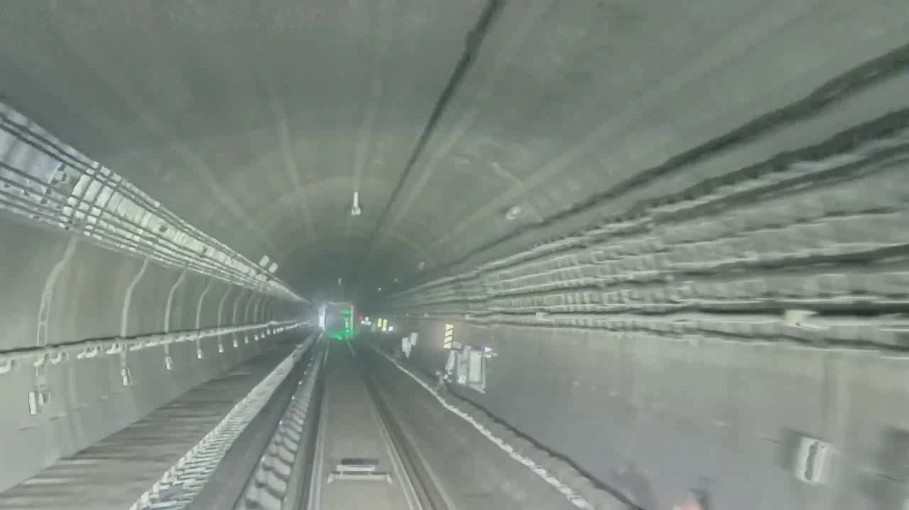

2D semantic segmentation
Seven semantic classes describe tracks, structures, people, and surrounding surfaces in the camera image.
RAILWAY SCENE UNDERSTANDING
Pre-release previewA Multi-Task Dataset and Benchmark
for Railway Scene Understanding
Camera and LiDAR observations of railway environments, from visible scene semantics to the geometry of trackside facilities.

1642259690070000_00001
01 / THE DATASET
RailScenes brings image semantics and object geometry into a shared railway data resource. Its scenes capture changes in environment, illumination, and track layout, alongside compact facilities observed at varying forward distances.
The current release preview presents completed 2D semantic segmentation and 3D object detection experiments. A third task, 3D semantic occupancy prediction, is under development.
Scene coverage describes the recorded observations; it does not by itself establish cross-domain generalization or operational safety.
Seven semantic classes describe tracks, structures, people, and surrounding surfaces in the camera image.
Six categories cover humans, signal lights, and three types of railway information plates, evaluated across sensor configurations.
Volumetric scene semantics with 20 × 20 × 25 cm voxels. Generation, supervision, and evaluation details will accompany the completed benchmark.
Counts describe the current partition. Independent-line or independent-route generalization is not claimed.
02 / BENCHMARKS
A snapshot of the completed experiments in the current manuscript. Missing results remain unreported.
Rendered from the active LaTeX table in the supplied manuscript, with method citations omitted for readability. Values and missing entries are preserved.
This tunnel DistancePlate has a GT forward coordinate of 97.87 m. Its projected 3D GT box spans 11.59 × 7.37 pixels in the original camera image. One raw point lies inside the 3D GT box; two lie within its BEV footprint.
IS-Fusion and FocalsConv show nearby candidates; the TransFusion miss is retained. This example illustrates sparse evidence, not a reliable detection-distance guarantee.
03 / BEYOND THE PAPER
Explore the selected full-frame examples and model comparisons. Click an image to inspect it at a larger size.
Examples are selected for illustration and are not a random or exhaustive test-set evaluation. Original prediction errors and misses are retained. Scene attributes follow the recorded categories; a “Station” record can include a railway facility area.
04 / MOTION & PREDICTIONS
Selected segmentation, fusion, and LiDAR detection clips. Muted, looping, and set to 3× the exported clip speed.
3× refers to the supplied visualization clip, not train speed or model inference FPS. Videos are independent demonstrations, not synchronized comparisons. Playback pauses outside the viewport. Reduced-motion preferences are respected; if autoplay is blocked, use the player’s play control.
05 / AVAILABILITY
The dataset is not yet publicly available. We plan to release data following paper acceptance. Access instructions, documentation, licensing, and the final benchmark package will be announced here.
GitHub accountSegmentation and detection tables, selected images, and video demonstrations.
The third task will be added when its experiments and supporting documentation are complete.
Download links, annotation specifications, evaluation tools, and release terms.